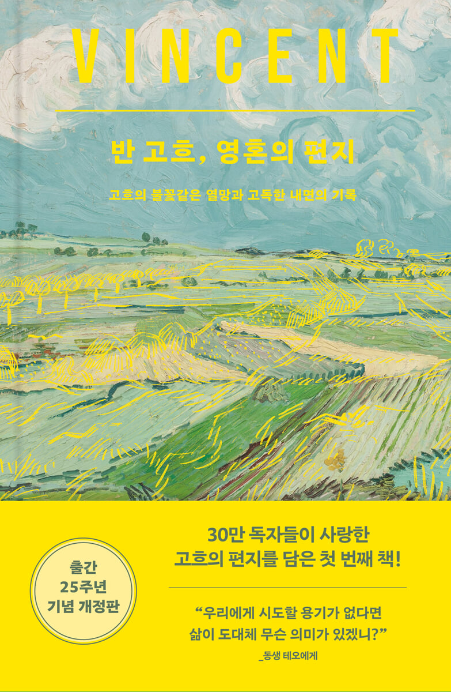

"나는 내 예술로 사람들을 어루만지고 싶다." 지독한 가난과 고독 속에서도 예술에 대한 희망을 놓지 않았던 빈센트. 동생 테오와 주고받은 700여 통의 편지는 그의 영혼이 담긴 기록입니다. 그의 치열한 삶과 예술 철학을 이 책을 통해 만나보세요.
빈센트 반 고흐에게 자연은 단순한 관찰의 대상이 아니었습니다. 요동치는 하늘과 바람에 흔들리는 들판을 통해 자신의 가장 깊은 감정을 쏟아냈습니다.
"결국 우리는 우리 자신의 영혼을 일깨워야 한다."동생 테오와 나눈 편지 속에는 예술을 향한 갈망이 생생하게 담겨 있습니다.
VINCENT VAN GOGH